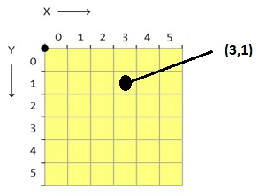

國旗
一個只有黑白兩色的圖形在電腦上可以用一個填滿數字的長方形表格來表示，最簡單的數字表示方法為1代表白色、0代表黑色，像圖1就是某個只有黑白兩色國旗的表格。
|
101111 |
 |
101010 |
111111 |
| 圖1 | 圖2 | 圖3 | 圖4 |
在表格中，每個0或1的位置可以用坐標表示，如圖2所示為6行6列的表格和對應的坐標圖(X, Y坐標皆由0開始)。
假設現在有兩個國旗的表格：棋盤狀國旗如圖3、三角形國旗如圖4。
小狸從這兩個國旗選一個出來，告訴你在這個國旗的表格中，坐標(1, 4)上的數字為1，請問他選的是哪種國旗？